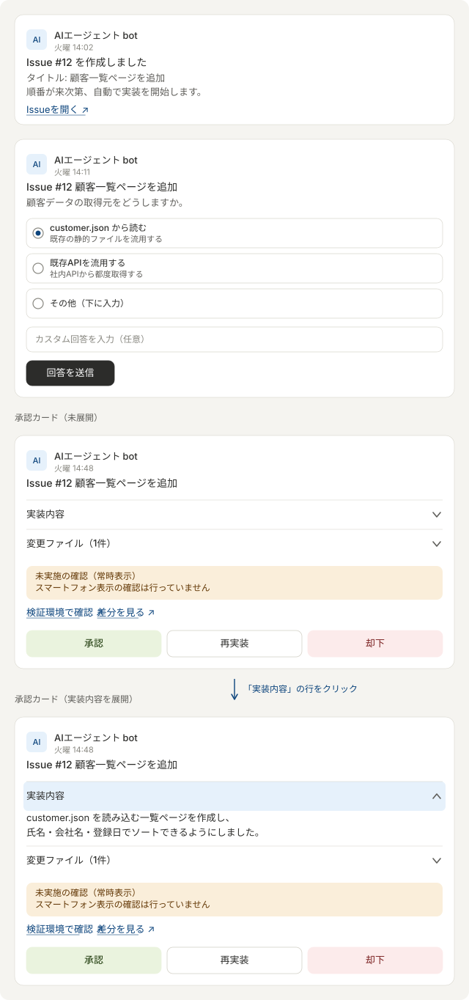

03. Power Automate の設定
フローは4本です。既存の3本はほぼそのまま使えますが、 2箇所の修正が必須です（本書 5章）。
| # | フロー名 | トリガー | やること |
|---|---|---|---|
| ① | Teams投稿 → request | Teamsチャネルの新規メッセージ | request/*.json を作る |
| ② | question → Teams質問 → decision | question/ にファイル作成 |
選択式カードを出し、回答を decision/ へ |
| ③ | waiting → Teams承認 → approval | waiting/ にファイル作成 |
承認カードを出し、結果を approval/ へ |
| ④ | reply → Teams通知 | reply/ にファイル作成 |
通知を投稿し、ファイルを reply/done へ |
④は新規です。powerautomate/04_reply_to_teams.zip をインポートできます。
Teamsに実際に届くカード（簡略版）
3種類のカードが時系列で届きます。 実際のAdaptive Cardの見た目そのものではなく、 「どの情報が」「どの操作と一緒に」届くかを示す簡略版です。

上から、①Issue作成通知（②のトリガー完了直後）、②Clineからの質問カード （選択肢は最大3件、3件目を自由記述の受け皿にしている）、 ③実装完了の承認カード（未展開／実装内容を展開）、です。
承認カードの「実装内容」「変更ファイル」はアコーディオンにできる
Adaptive Cardには Action.ToggleVisibility（スキーマ1.2〜）があり、
見出し行をクリックすると中身が開閉する、上のようなアコーディオンを組めます。
承認カードが長くなりがちなので、補足情報は畳んでおくと読みやすくなります。
{
"type": "Container",
"selectAction": {
"type": "Action.ToggleVisibility",
"targetElements": ["impl-body", "chev-up", "chev-down"]
},
"items": [
{ "type": "ColumnSet", "columns": [
{ "type": "Column", "width": "stretch",
"items": [{ "type": "TextBlock", "text": "実装内容", "weight": "Bolder" }] },
{ "type": "Column", "width": "auto", "items": [
{ "type": "Image", "url": "chevron-down.png", "id": "chev-down", "width": "16px" },
{ "type": "Image", "url": "chevron-up.png", "id": "chev-up", "width": "16px", "isVisible": false }
]}
]}
]
},
{
"type": "Container", "id": "impl-body", "isVisible": false,
"items": [{ "type": "TextBlock", "text": "${implementationText}", "wrap": true }]
}
「未実施の確認」だけは畳まないでください。 理由は2つあります。
- Clineが「確認したつもり」で書いた内容に承認者が引きずられないよう、 未実施の項目は常に目に入る位置に置く必要がある
- 新しいTeamsクライアントで
ToggleVisibilityが反応しない不具合が 報告されており（2024年、Microsoft Tech Community）、 トグルが壊れると中身ごと見えなくなる。判断に関わる情報は トグルの成否に依存させない
このカードに「未実施の確認」欄が空のまま届くようであれば、
.agent-summary.json が作られずフォールバック進行している可能性があるので、
logs/issue-<N>.log を確認してください（docs/01_architecture.md の弱点4を参照）。
図は images/teams-cards.svg、生成は tools/build_teams_cards_svg.py です。
1. チャネル構成
チャネルは2つに分けてください。
| チャネル | 用途 |
|---|---|
| 依頼チャネル | 人が依頼を投稿する。①のトリガー元 |
| 通知チャネル | エージェントからの通知・質問・承認カード |
同じチャネルにすると、Flow botの投稿が①のトリガーを再度引き、 Issueが無限に作られます。 必ず分けるか、①にBot除外条件を入れてください。
Bot除外条件を使う場合は、①のトリガー直後に「条件」を置きます。
条件: @empty(coalesce(triggerBody()?['from']?['user']?['displayName'], ''))
true → 何もしない（Botの投稿）
false → ファイルの作成
2. ① Teams投稿 → request
トリガー: Microsoft Teams「チャネルに新しいメッセージが追加されたとき」
（依頼チャネル / 1分間隔 / splitOn: @triggerOutputs()?['body']）
アクション: OneDrive for Business「ファイルの作成」
| 項目 | 値 |
|---|---|
| フォルダーのパス | /work/agent/request |
| ファイル名 | agent_@{ticks(utcNow())}.json |
ファイルコンテンツ:
@string(
addProperty(
addProperty(
addProperty(
addProperty(json('{}'), 'message', coalesce(triggerBody()?['body']?['content'], '')),
'sender', coalesce(triggerBody()?['from']?['user']?['displayName'], '')
),
'id', coalesce(string(triggerBody()?['id']), '')
),
'datetime', utcNow()
)
)
出力されるJSON:
{
"message": "<p>顧客一覧ページを作ってください</p>",
"sender": "松田",
"id": "1726900000000",
"datetime": "2026-09-21T06:00:00Z"
}
id はTeamsのMessage IDです。Python側はこれで重複を判定するので、
必ず含めてください。HTMLタグはPython側で除去します。
3. ② question → Teams質問 → decision
トリガー: OneDrive「ファイルが作成されたとき」
| 項目 | 値 |
|---|---|
| フォルダー | /work/agent/question |
| サブフォルダーを含める | いいえ |
| 間隔 | 1分 |
アクション構成
- ファイル コンテンツの取得
- 作成（Compose）:
@base64ToString(body('ファイル_コンテンツの取得')?['$content']) - JSON の解析
{
"type": "object",
"properties": {
"type": { "type": "string" },
"messageId": { "type": "string" },
"issueNumber": { "type": "integer" },
"issueTitle": { "type": "string" },
"questionId": { "type": "string" },
"question": { "type": "string" },
"choice1Id": { "type": "string" }, "choice1Title": { "type": "string" }, "choice1Description": { "type": "string" },
"choice2Id": { "type": "string" }, "choice2Title": { "type": "string" }, "choice2Description": { "type": "string" },
"choice3Id": { "type": "string" }, "choice3Title": { "type": "string" }, "choice3Description": { "type": "string" }
}
}
- Teams「アダプティブ カードを投稿して応答を待機」（通知チャネル）
Input.ChoiceSet id=selectedChoiceとInput.Text id=customResponse - Compose:
@base64(coalesce(outputs('Post_Question_Card')?['body/data/customResponse'], '')) - Compose で回答オブジェクトを組み立て
- OneDrive「ファイルの作成」→
/work/agent/decision/issue-<N>.json
Pythonが期待する decision/issue-<N>.json:
{
"issueNumber": 12,
"questionId": "customer-api-source",
"selectedChoice": "choice_1",
"customResponseBase64": "44GT44KM...",
"result": "answered"
}
selectedChoice が選択肢のidと一致するか、customResponseBase64 に
中身があれば回答として受理されます。
選択肢が2つしかない質問では
choice3Idが空になります。 カード側で空の選択肢が出ないよう、choicesを条件付きにするか、 Python側で常に3件目に「その他（カスタム回答）」を入れる運用にしてください。
4. ③ waiting → Teams承認 → approval
トリガー: OneDrive「ファイルが作成されたとき」
| 項目 | 値 |
|---|---|
| フォルダー | /work/agent/waiting |
| 間隔 | 1分（現状5分。遅いので変更推奨） |
JSON の解析 のスキーマ（Pythonが出力する項目に合わせて拡張してください）:
{
"type": "object",
"properties": {
"type": { "type": "string" },
"status": { "type": "string" },
"messageId": { "type": "string" },
"issueNumber": { "type": "integer" },
"issueTitle": { "type": "string" },
"issueUrl": { "type": "string" },
"branch": { "type": "string" },
"pullRequestNumber": { "type": "integer" },
"pullRequestUrl": { "type": "string" },
"changedFilesText": { "type": "string" },
"summaryText": { "type": "string" },
"implementationText": { "type": "string" },
"verificationText": { "type": "string" },
"notPerformedText": { "type": "string" },
"notesText": { "type": "string" },
"previewUrl": { "type": "string" }
}
}
承認カードには次を載せると判断しやすくなります。
summaryText… Clineの実装報告verificationText… 実際に確認した内容notPerformedText… 未実施の確認（ここが重要）changedFilesText… 変更ファイル一覧Action.OpenUrl→previewUrl（tools-betaでの動作確認）Action.OpenUrl→pullRequestUrl（差分レビュー）Action.Submit→{"action":"approve"}/{"action":"reject"}/{"action":"rework"}Input.Text id=reworkComment… 再実装時の修正指示
アクション: OneDrive「ファイルの作成」→ /work/agent/approval / issue-<N>.json
{
"issueNumber": 12,
"action": "approve",
"reworkCommentBase64": "",
"result": "answered"
}
5. 既存フローの必須修正
5-1. ③の出力先フォルダ（重要）
現状 /work/agent/approval-test になっています。
/work/agent/approval へ変更してください。
これを直さないと承認しても何も起きません。
5-2. ③のトリガー間隔
5分 → 1分へ変更してください。承認カードが出るまでの待ち時間が短くなります。
5-3. ③の「修正指示が空のとき」の分岐
現状、action = rework かつ修正指示が空の場合は
「修正指示を入力してください」と投稿するだけでフローが終わり、
カードが消費済みになるためやり直せなくなります。
カード側で入力必須にするのが確実です。
{
"type": "Input.Text",
"id": "reworkComment",
"isMultiline": true,
"isRequired": true,
"errorMessage": "再実装する場合は修正指示を入力してください。",
"placeholder": "修正内容を具体的に入力してください。"
}
6. ④ reply → Teams通知（新規）
インポート手順
- Power Automate → マイフロー → インポート → パッケージのインポート（レガシ）
powerautomate/04_reply_to_teams.zipをアップロード- 「インポートのセットアップ」で Teams / OneDrive の接続を選択
- インポート後にフローを開き、トリガーのフォルダーを選び直す
（パッケージには
REPLACE_WITH_REPLY_FOLDER_IDというプレースホルダーが入っています） →/work/agent/replyを選択 - 「元の投稿へ返信」「通知チャネルへ投稿」のチーム／チャネルを確認
- 保存してオンにする
手で作る場合
- トリガー: OneDrive「ファイルが作成されたとき」
/work/agent/reply（1分） - ファイル コンテンツの取得
- Compose:
@base64ToString(body('ファイルコンテンツの取得')?['$content']) - JSON の解析（
typestatusissueNumberissueTitleissueUrlbranchmessageIdmessagepreviewUrlpullRequestUrl） - 条件:
messageIdが空でない - はい → Teams「チャットまたはチャネルでアダプティブ カードを投稿する」（依頼チャネル /replyToIdにmessageId） - いいえ → 通知チャネルへ投稿 - OneDrive「ファイルの移動」→
/work/agent/reply/done/@{triggerOutputs()?['headers/x-ms-file-name']}
messageId を使うと元の依頼スレッドに返信されるので、
依頼者は自分の投稿のスレッドで進捗を追えます。
ファイルの移動は必ず入れてください。 これが無いと reply が溜まり続け、 トリガーが同じファイルを再処理して同じ通知が何度も飛びます。
7. reply JSON の種類
Pythonが出す type は次の通りです。カードの見た目を変える場合の分岐に使えます。
| type | タイミング |
|---|---|
issue_created |
Issue作成直後 |
implementation_started |
実装開始 |
implementation_failed |
実装失敗・タイムアウト |
rework |
再実装開始 |
approved |
承認されマージ開始 |
completed |
マージ・Issueクローズ完了 |
rejected |
却下 |
encoding_error |
文字化け検出によりマージ中止 |
8. 動作確認
各フローは「テスト」→「手動」で単体確認できます。 OneDriveトリガーのフローは、対象フォルダへ手でJSONを置くのが確実です。
# 承認カードのテスト
@'
{
"type": "implementation_completed",
"issueNumber": 9999,
"issueTitle": "テスト",
"issueUrl": "https://github.com",
"messageId": "",
"branch": "feature/issue-9999-test",
"changedFilesText": "- test/index.html",
"summaryText": "テスト用の承認カードです。",
"previewUrl": "https://example.com",
"status": "waiting_approval"
}
'@ | Set-Content -Encoding UTF8 "$env:AGENT_ROOT\waiting\issue-9999.json"